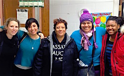
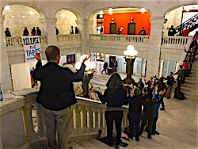
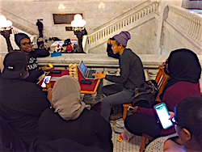
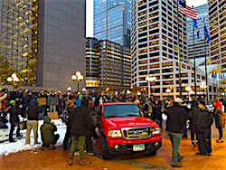

Friends,
Early in the morning of Nov. 15, a 24-year-old black man named Jamar Clark was shot by police near the Fourth Precinct police station in Minneapolis under uncertain circumstances. Some witnesses say that he was shot "execution style" while handcuffed. His family removed him from life support, and he tragically died later that day.
Protests erupted immediately. Demonstrators blocked Interstate 94, and 51 of them were arrested. A community of peaceful protestors set up tents and occupied the Fourth Precinct refusing to leave until justice was served.
#JusticeForJamar was their call.

The nonviolent direct action trainers in Minneapolis. FOR Training Coordinator Gretchen Honnold is far left and Lizzy Jean of Deep Abiding Love Project is 2nd from left. (Photo: Leslie MacFadyen.) |
On Nov. 23, when the police precinct occupation was in its tenth day, five protesters were shot by a trio of alleged white supremacists. FOR staff immediately made calls of support and solidarity to local organizers, contacted FOR members in the area, and were invited into the center of the Black Lives Matter movement in Minnesota.
The community in Minneapolis, weary from weathering the tragic shootings in tandem with the police's pepper spray and rubber bullets, asked us to host nonviolent direct action trainings and assist in building necessary infrastructure to sustain the local resistance.
It was our honor to participate. At the time, our team was still in dialogue about shifting the focus of Campus Weekends to make grassroots organizing more central to how we engage young people. Now was the time to test this new idea. We decided to make Minnesota the first of what will hopefully be many more The People's Campus Weekends.
Beginning with Rev. Osagyefo Sekou on Thanksgiving Day, our team began arriving in Minnesota to support a brilliant crew of local organizers. Over the next several days of Thanksgiving weekend, we -- Rev. Sekou, Gretchen Honnold, Lizzy Jean of Deep Abiding Love Project, and I -- led three nonviolent civil disobedience trainings for more than 250 people, provided one legal observer training for dozens of residents, hosted a prayer breakfast for 20 clergy, and established a lasting jail support infrastructure.
This preparation culminated in an all-day, nonviolent direct action on Monday, Dec. 1, in which a crowd of people occupied Minneapolis City Hall.

Protestors begin occupying Minneapolis City Hall on Dec. 1, with clergy on the stairs. |
First the clergy, some in full regalia, silently marched into the downtown building, past a desk of surprised police officers. Soon after, dozens of protesters followed. Then, as the clergy lined the main stairs, songs and chants began echoing between the towering ceilings of City Hall while the flood of protesters walked up to join us. Watch the video.
The message was that the people of Minnesota own the city, not the public servants and officers who far too often exploit the people. The message was that no matter the inadequate charges of the city toward the violence of white supremacists, the people "charge terrorism."
As we played dominoes, cheered, and laughed in the public building, the message soon became that the joy of our spirits was itself an act of resistance.

Young activists playing games and listening to music as they occupy Minneapolis City Hall. |
While local media covered the lively demonstration, residents presented the city -- Mayor Betsy Hodges and City Council -- with three demands:
- Release the tapes of Jamar's murder.
- Send the case directly to court, bypassing the far too often untrustworthy grand jury process.
- Develop a community protection plan to invest in the neighborhood surrounding the Fourth Precinct, ensuring there will be no backlash on the people as a result of the occupation.
Several times throughout the day, local organizers privately and publicly thanked FOR for our presence in Minneapolis.

A rally outside Minneapolis City Hall following the occupation. |
Our time there provided them a necessary boost of morale, and it provided us the opportunity to strengthen our relationships with some of the country's most brilliant organizers, long-time FOR members, and friends in the struggle. Plus we discovered that The People's Campus Weekend model was a great success, and we're very excited about continuing to connect young people with grassroots organizing in this manner.
FOR will continue to support the Black Lives Matter movement of Minnesota until they obtain #JusticeForJamar and for all black victims of police violence in Minneapolis and around the country.
Thank you for your support!
With much hope,
 Anthony Grimes Anthony Grimes
Director of Campaigns and Strategy
Fellowship of Reconciliation USA
In addition to being a writer, photographer/filmmaker, human rights activist, pastor and theologian, Anthony Grimes is FOR-USA's new Director of Campaigns and Strategy. Formerly an FOR National Council member, we are delighted to welcome him to our staff family. To learn more about Anthony, please check out his blog. |